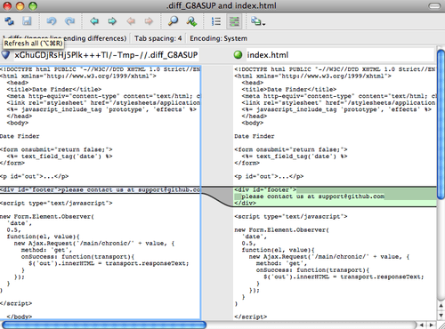

Конфигурирование Git
В первой главе вкратце было рассказано, как можно изменить настройки Git'а с помощью команды git config. Одна из первых вещей, которую мы тогда сделали, это установили свои имя и e-mail адрес:
$ git config --global user.name "John Doe"
$ git config --global user.email johndoe@example.com
Теперь мы разберём пару более интересных опций, которые вы можете задать тем же образом, чтобы настроить Git под себя.
Мы уже рассмотрели некоторые детали настройки Git'а в первой главе, но давайте сейчас быстренько пройдёмся по ним снова. Git использует набор конфигурационных файлов для задания желаемого нестандартного поведения. Первым местом, в котором Git ищет заданные параметры, является файл /etc/gitconfig, содержащий значения, действующие для всех пользователей системы и всех их репозиториев. Когда вы передаёте git config опцию --system, происходит чтение или запись именно этого файла.
Следующее место, в которое Git заглядывает, это файл ~/.gitconfig, который для каждого пользователя свой. Вы можете заставить Git читать или писать этот файл, передав опцию --global.
И наконец, Git ищет заданные настройки в конфигурационном файле в Git-каталоге (.git/config) того репозитория, который вы используете в данный момент. Значения оттуда относятся к данному конкретному репозиторию. Значения настроек на новом уровне переписывают значения, заданные на предыдущем уровне. Поэтому, например, значения из .git/config перебивают значения в /etc/gitconfig. Позволяется задавать настройки путём редактирования конфигурационного файла вручную, используя правильный синтаксис, но, как правило, проще воспользоваться командой git config.
Основные настройки клиента
Настройки конфигурации, поддерживаемые Git'ом, можно разделить на две категории: клиентские и серверные. Большинство опций — клиентские, они задают предпочтения в вашей личной работе. Несмотря на то, что опций доступно великое множество, мы рассмотрим только некоторые из них — те, которые широко используются или значительно влияют на вашу работу. Многие опции полезны только в редких случаях, которые мы не будем здесь рассматривать. Если вы хотите посмотреть список всех опций, которые есть в вашем Git'е, выполните:
$ git config --help
В странице руководства для git config все доступные опции описаны довольно подробно.
core.editor
Для создания и редактирования сообщений коммитов и меток Git по умолчанию использует тот редактор, который установлен текстовым редактором по умолчанию в вашей системе, или, как запасной вариант, редактор Vi. Чтобы сменить это умолчание на что-нибудь другое, используйте настройку core.editor:
$ git config --global core.editor emacs
Теперь неважно, что установлено в качестве вашего редактора по умолчанию в переменной оболочки, при редактировании сообщений Git будет запускать Emacs.
commit.template
Если установить в этой настройке путь к какому-нибудь файлу в вашей системе, Git будет использовать содержимое этого файла в качестве сообщения по умолчанию при коммите. Например, предположим, что вы создали шаблонный файл $HOME/.gitmessage.txt, который выглядит следующим образом:
заголовок
что произошло
[карточка: X]
Чтобы попросить Git использовать это в качестве сообщения по умолчанию, которое будет появляться в вашем редакторе при выполнении git commit, задайте значение настройки commit.template:
$ git config --global commit.template $HOME/.gitmessage.txt
$ git commit
После этого, когда во время создания коммита запустится ваш редактор, в нём в качестве сообщения-заглушки будет находиться что-то вроде такого:
заголовок
что произошло
[карточка: X]
# Please enter the commit message for your changes. Lines starting
# with '#' will be ignored, and an empty message aborts the commit.
# On branch master
# Changes to be committed:
# (use "git reset HEAD <file>..." to unstage)
#
# modified: lib/test.rb
#
~
~
".git/COMMIT_EDITMSG" 14L, 297C
Если у вас существует определённая политика для сообщений коммитов, то задание шаблона, соответствующего этой политике, и настройка Git'а на использование его по умолчанию могут увеличить вероятность того, что этой политики будут придерживаться постоянно.
core.pager
Настройка core.pager определяет, какой пейджер использовать при постраничном отображении вывода таких команд, как log и diff. Вы можете указать здесь more или свой любимый пейджер (по умолчанию используется less), или можно отключить его, указав пустую строку:
$ git config --global core.pager ''
Если это выполнить, Git будет выдавать весь вывод полностью для всех команд вне зависимости от того, насколько он большой.
user.signingkey
Если вы делаете подписанные аннотированные метки (смотри главу 2), то, чтобы облегчить этот процесс, можно задать свой GPG-ключ для подписи в настройках. Задать ID своего ключа можно так:
$ git config --global user.signingkey <id-gpg-ключа>
Теперь, чтобы подписать метку, не обязательно каждый раз указывать свой ключ команде git tag:
$ git tag -s <имя-метки>
core.excludesfile
Чтобы Git не видел определённые файлы проекта как неотслеживаемые и не пытался добавить их в индекс при выполнении git add, можно задать для них шаблоны в файл .gitignore, как это описано главе 2. Однако, если вам необходим другой файл, который будет хранить эти или дополнительные значения вне вашего проекта, то вы можете указать Git'у расположение такого файла с помощью настройки core.excludesfile. Просто задайте там путь к файлу, в котором написано то же, что пишется в .gitignore.
help.autocorrect
Эта опция доступна только в Git 1.6.1 и более поздних. Если вы неправильно наберёте команду в Git'е, он выдаст что-то вроде этого:
$ git com
git: 'com' is not a git-command. See 'git --help'.
Did you mean this?
commit
Если установить help.autocorrect в 1, Git автоматически запустит нужную команду, если она была единственным вариантом при этом сценарии.
Цвета в Git
Git умеет раскрашивать свой вывод для терминала, что может помочь вам быстрее и легче визуально анализировать вывод. Множество опций в настройках помогут вам установить цвета в соответствии со своими предпочтениями.
color.ui
Git автоматически раскрасит большую часть своего вывода, если вы его об этом попросите. Вы можете очень тонко задать, что вы хотите раскрасить и как. Но, чтобы просто включить весь предустановленный цветной вывод для терминала, установите color.ui в true:
$ git config --global color.ui true
Когда установлено это значение, Git раскрашивает свой вывод в случае, если вывод идёт на терминал. Другие доступные значения это: false, при котором вывод никогда не раскрашивается, и always, при котором цвета добавляются всегда, даже если вы перенаправляете вывод команд Git'а в файл или через конвейер другой команде.
Вам вряд ли понадобится использовать color.ui = always. В большинстве случаев, если вам нужны коды цветов в перенаправленном выводе, то вы можете просто передать команде флаг --color, чтобы заставить её добавить коды цветов. Настройка color.ui = true — это почти всегда именно то, что вам нужно.
color.*
Если вам необходимо более точно задать какие команды и как должны быть раскрашены, то в Git'е есть возможность задать настройки цветов для каждой команды отдельно. Каждая из этих настроек может быть установлена в true, false или always:
color.branch
color.diff
color.interactive
color.status
Кроме того, каждая из этих настроек имеет свои поднастройки, которые можно использовать для задания определённого цвета для какой-то части вывода, если вы хотите перезадать цвета. Например, чтобы получить метаинформацию в выводе команды diff в синем цвете с чёрным фоном и жирным шрифтом, выполните
$ git config --global color.diff.meta “blue black bold”
Цвет может принимать любое из следующих значений: normal, black, red, green, yellow, blue, magenta, cyan и white. Если вы хотите задать атрибут вроде bold, как мы делали в предыдущем примере, то на выбор представлены: bold, dim, ul, blink и reverse.
Если вам это интересно, загляните в страницу руководства для git config, чтобы узнать обо всех доступных для конфигурации настройках.
Внешние утилиты merge и diff
Хоть в Git'е и есть внутренняя реализация diff, которой мы и пользовались до этого момента, вы можете заменить её внешней утилитой. И ещё вы можете установить графическую утилиту для разрешения конфликтов слияния, вместо того, чтобы разрешать конфликты вручную. Мы рассмотрим настройку Perforce Visual Merge Tool (P4Merge) в качестве замены diff и для разрешения конфликтов слияния, потому что это удобная графическая утилита и к тому же бесплатная.
Если вам захотелось её попробовать, то P4Merge работает на всех основных платформах, поэтому проблем с ней быть не должно. В примерах мы будем использовать пути к файлам, которые используются на Mac'е и Linux'е; для Windows вам надо заменить /usr/local/bin на тот путь к исполняемым файлам, который используется в вашей среде.
Скачать P4Merge можно здесь:
http://www.perforce.com/product/components/perforce-visual-merge-and-diff-tools
Для начала сделаем внешние сценарии-обёртки для запуска нужных команд. Я буду использовать Mac'овский путь к исполняемым файлам; для других систем это будет тот путь, куда установлен ваш файл p4merge. Сделайте для слияния сценарий-обёртку с именем extMerge, он будет вызывать бинарник со всеми переданными аргументами:
$ cat /usr/local/bin/extMerge
#!/bin/sh
/Applications/p4merge.app/Contents/MacOS/p4merge $*
Обёртка для команды diff проверяет, что ей было передано семь аргументов, и передаёт два из них вашему сценарию для слияния. По умолчанию Git передаёт следующие аргументы программе, выполняющей diff:
путь старый-файл старый-хеш старые-права новый-файл новый-хеш новые-права
Так как нам нужны только старый-файл и новый-файл, воспользуемся сценарием-обёрткой, чтобы передать только те аргументы, которые нам нужны:
$ cat /usr/local/bin/extDiff
#!/bin/sh
[ $# -eq 7 ] && /usr/local/bin/extMerge "$2" "$5"
Ещё следует убедиться, что наши сценарии имеют права на исполнение:
$ sudo chmod +x /usr/local/bin/extMerge
$ sudo chmod +x /usr/local/bin/extDiff
Теперь мы можем настроить свой конфигурационный файл на использование наших собственных утилит для разрешения слияний и diff'а. Для этого нам потребуется поменять несколько настроек: merge.tool, чтобы указать Git'у на то, какую стратегию использовать; mergetool.*.cmd, чтобы указать, как запустить команду; mergetool.trustExitCode, чтобы указать Git'у, можно ли по коду возврата определить, было разрешение конфликта слияния успешным или нет; и diff.external для того, чтобы задать команду, используемую для diff. Таким образом, вам надо либо выполнить четыре команды git config
$ git config --global merge.tool extMerge
$ git config --global mergetool.extMerge.cmd \
'extMerge "$BASE" "$LOCAL" "$REMOTE" "$MERGED"'
$ git config --global mergetool.trustExitCode false
$ git config --global diff.external extDiff
либо отредактировать свой файл ~/.gitconfig и добавить туда следующие строки:
[merge]
tool = extMerge
[mergetool "extMerge"]
cmd = extMerge \"$BASE\" \"$LOCAL\" \"$REMOTE\" \"$MERGED\"
trustExitCode = false
[diff]
external = extDiff
Если после того, как всё это настроено, вы выполните команду diff следующим образом:
$ git diff 32d1776b1^ 32d1776b1
то вместо того, чтобы получить вывод команды diff в терминал, Git запустит P4Merge, как это показано на рисунке 7-1.

Рисунок 7-1. P4Merge.
Если при попытке слияния двух веток вы получите конфликт, запустите команду git mergetool — она запустит графическую утилиту P4Merge, с помощью которой вы сможете разрешить свои конфликты.
Что удобно в нашей настройке с обёртками, так это то, что вы с лёгкостью можете поменять утилиты для слияния и diff'а. Например, чтобы изменить свои утилиты extDiff и extMerge так, чтобы они использовали утилиту KDiff3, всё, что вам надо сделать, это отредактировать свой файл extMerge:
$ cat /usr/local/bin/extMerge
#!/bin/sh
/Applications/kdiff3.app/Contents/MacOS/kdiff3 $*
Теперь Git будет использовать утилиту KDiff3 для просмотра diff'ов и разрешения конфликтов слияния.
В Git'е уже есть предустановленные настройки для множества других утилит для разрешения слияний, для которых вам не надо полностью прописывать команду для запуска, а достаточно просто указать имя утилиты. К таким утилитам относятся: kdiff3, opendiff, tkdiff, meld, xxdiff, emerge, vimdiff и gvimdiff. Например, если вам неинтересно использовать KDiff3 для diff'ов, а хочется использовать его только для разрешения слияний, и команда kdiff3 находится в пути, то вы можете выполнить
$ git config --global merge.tool kdiff3
Если вместо настройки файлов extMerge и extDiff вы выполните эту команду, Git будет использовать KDiff3 для разрешения слияний и обычный свой инструмент diff для diff'ов.
Форматирование и пробельные символы
Проблемы с форматированием и пробельными символами — одни из самых дурацких и трудноуловимых проблем из тех, с которыми сталкиваются многие разработчики при совместной работе над проектами, особенно если разработка ведётся на разных платформах. Очень просто внести малозаметные изменения с помощью пробельных символов при, например, подготовке патчей из-за того, что текстовые редакторы добавляют их без предупреждения, или в кросс-платформенных проектах Windows-программисты добавляют символы возврата каретки в конце изменяемых ими строк. В Git'е есть несколько опций для того, чтобы помочь с решением подобных проблем.
core.autocrlf
Если вы пишете код на Windows или пользуетесь другой системой, но работаете с людьми, которые пишут на Windows, то наверняка рано или поздно столкнётесь с проблемой конца строк. Она возникает из-за того, что Windows использует для переноса строк и символ возврата каретки, и символ перехода на новую строку, в то время как в системах Mac и Linux используется только символ перехода на новую строку. Это незначительное, но невероятно раздражающее обстоятельство при кросс-платформенной работе.
Git может справиться с этим, автоматически конвертируя CRLF-концы строк в LF при коммите и в обратную сторону при выгрузке кода из репозитория на файловую систему. Данную функциональность можно включить с помощью настройки core.autocrlf. Если вы используете Windows, установите настройку в true, тогда концы строк из LF будут сконвертированы в CRLF при выгрузке кода:
$ git config --global core.autocrlf true
Если вы сидите на Linux'е или Mac'е, где используются LF-концы строк, вам не надо, чтобы Git автоматически конвертировал их при выгрузке файлов из репозитория. Однако, если вдруг случайно кто-то добавил файл с CRLF-концами строк, то хотелось бы, чтобы Git исправил это. Можно указать Git'у, чтобы он конвертировал CRLF в LF только при коммитах, установив настройку core.autocrlf в input:
$ git config --global core.autocrlf input
Такая настройка даст вам CRLF-концы в выгруженном коде на Windows-системах и LF-концы на Mac'ах и Linux'е, и в репозитории.
Если вы Windows-программист, пишущий проект, предназначенный только для Windows, то можете отключить данную функциональность и записывать символы возврата каретки в репозиторий, установив значение настройки в false:
$ git config --global core.autocrlf false
core.whitespace
Git заранее настроен на обнаружение и исправление некоторых проблем, связанных с пробелами. Он может находить четыре основные проблемы с пробелами — две из них по умолчанию отслеживаются, но могут быть выключены, и две по умолчанию не отслеживаются, но их можно включить.
Те две настройки, которые включены по умолчанию — это trailing-space, которая ищет пробелы в конце строк, и space-before-tab, которая ищет пробелы перед символами табуляции в начале строк.
Те две, которые по умолчанию выключены, но могут быть включены — это indent-with-non-tab, которая ищет строки, начинающиеся с восьми или более пробелов вместо символов табуляции, и cr-at-eol, которая сообщает Git'у, что символы возврата каретки в конце строк допустимы.
Вы можете указать Git'у, какие из этих настроек вы хотите включить, задав их в core.whitespace через запятую. Отключить настройку можно либо опустив её в списке, либо дописав знак - перед соответствующим значением. Например, если вы хотите установить все проверки, кроме cr-at-eol, то это можно сделать так:
$ git config --global core.whitespace \
trailing-space,space-before-tab,indent-with-non-tab
Git будет выявлять эти проблемы при запуске команды git diff и пытаться выделить их цветом так, чтобы можно было их исправить ещё до коммита. Кроме того, эти значения будут использоваться, чтобы помочь с применением патчей с помощью git apply. Когда будете принимать патч, можете попросить Git предупредить вас о наличии в патче заданных проблем с пробельными символами:
$ git apply --whitespace=warn <патч>
Или же Git может попытаться автоматически исправить проблему перед применением патча:
$ git apply --whitespace=fix <патч>
Данные настройки также относятся и к команде git rebase. Если вы вдруг сделали коммиты, в которых есть проблемы с пробельными символами, но ещё не отправили их на сервер, запустите rebase с опцией --whitespace=fix, чтобы Git автоматически исправил ошибки во время переписывания патчей.
Настройка сервера
Для серверной части Git'а доступно не так уж много настроек, но среди них есть несколько интересных, на которые следует обратить внимание.
receive.fsckObjects
По умолчанию Git не проверяет все отправленные на сервер объекты на целостность. Хотя Git и может проверять, что каждый объект всё ещё совпадает со своей контрольной суммой SHA-1 и указывает на допустимые объекты, по умолчанию Git не делает этого при каждом запуске команды push. Эта операция довольно затратна и может значительно увеличить время выполнения git push в зависимости от размера репозитория и количества отправляемых данных. Если вы хотите, чтобы Git проверял целостность объектов при каждой отправке данных, сделать это можно, установив receive.fsckObjects в true:
$ git config --system receive.fsckObjects true
Теперь Git, перед тем как принять новые данные от клиента, будет проверять целостность вашего репозитория, чтобы убедиться, что какой-нибудь неисправный клиент не внёс повреждённые данные.
receive.denyNonFastForwards
Если вы переместили с помощью команды rebase уже отправленные на сервер коммиты и затем пытаетесь отправить их снова или, иначе, пытаетесь отправить коммит в такую удалённую ветку, которая не содержит коммит, на который на текущий момент указывает удалённая ветка — вам будет в этом отказано. Обычно это хорошая стратегия. Но в случае если вы переместили коммиты, хорошо понимая, зачем это вам нужно, вы можете вынудить Git обновить удалённую ветку, передав команде push флаг -f.
Чтобы отключить возможность принудительного обновления веток, задайте receive.denyNonFastForwards:
$ git config --system receive.denyNonFastForwards true
Есть ещё один способ сделать это — с помощью перехватчиков, работающих на приём (receive hooks), на стороне сервера, которые мы рассмотрим вкратце позднее. Такой подход позволит сделать более сложные вещи, такие как, например, запрет принудительных обновлений только для определённой группы пользователей.
receive.denyDeletes
Один из способов обойти политику denyNonFastForwards — это удалить ветку, а затем отправить новую ссылку на её место. В новых версиях Git'а (начиная с версии 1.6.1) вы можете установить receive.denyDeletes в true:
$ git config --system receive.denyDeletes true
Этим вы запретите удаление веток и меток с помощью команды push для всех сразу — ни один из пользователей не сможет этого сделать. Чтобы удалить ветку на сервере, вам придётся удалить файлы ссылок с сервера вручную. Также есть и другие более интересные способы добиться этого, но уже для отдельных пользователей с помощью ACL (списков контроля доступа), как мы увидим в конце этой главы.